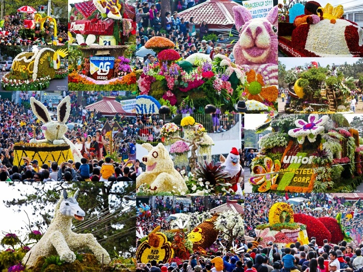

History of Panagbenga
The Panagbenga Festival started in 1995 to uplift Baguio's spirits after the 1990 earthquake, and to promote tourism and cultural pride through flowers and festivities.

The Panagbenga Festival, meaning "Season of Blooming," is Baguio City's grand flower festival, celebrating the region’s floral abundance and cultural heritage with floats, street dancing, and community activities throughout February.
Giant floats adorned with fresh flowers parade down Session Road, showcasing Baguio’s blooming beauty.
Performers dressed in colorful floral-themed costumes dance gracefully through the streets to upbeat music.
Locals actively participate in parades, exhibitions, markets, and sports events promoting unity and tourism.
Panagbenga also highlights environmental preservation, indigenous culture, and Baguio’s love for nature.
Concerts, band exhibitions, and street performances add rhythm to the festive atmosphere all month long.
Panagbenga strengthens Baguio’s identity as the Summer Capital of the Philippines through festive celebrations.
The Grand Street Parade, Grand Float Parade, and Session Road in Bloom are the major highlights. These colorful events fill the city with joy, flowers, and excitement, attracting thousands of local and international visitors.

The Panagbenga Festival started in 1995 to uplift Baguio's spirits after the 1990 earthquake, and to promote tourism and cultural pride through flowers and festivities.

During Panagbenga, Baguio’s main commercial hub transforms into a pedestrian paradise filled with flower stalls, local crafts, food booths, and entertainment.

Panagbenga integrates environmental awareness, encouraging the conservation of nature, cleanliness, and respect for Baguio’s fragile ecosystem.